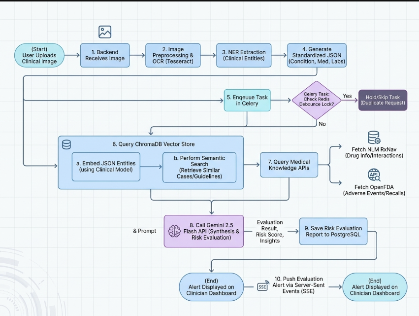
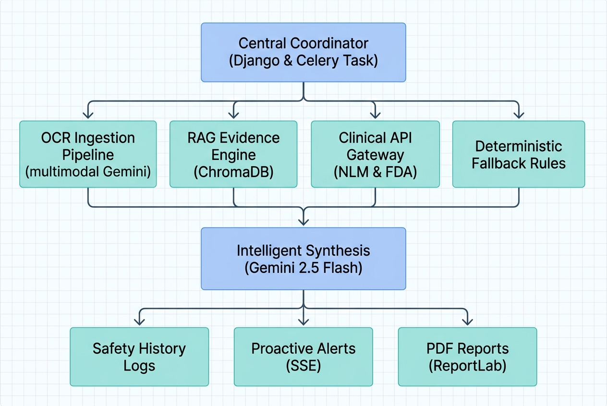

MedGuardian AI
A Proactive Medication Digital Twin: Implementing Active Event-Driven Safety Auditing and Continuous Clinical Surveillance
The Global Problem: Medication Safety Crisis
Medication errors and adverse drug interactions remain one of the leading causes of preventable patient harm worldwide.
Modern patients, especially those suffering from chronic diseases such as diabetes, hypertension, heart disease, or kidney disease, often take multiple medicines simultaneously—a practice known as polypharmacy.
As the number of medicines increases, the complexity of managing safety cascades exponentially, drastically increasing the risk of severe drug-drug interactions, incorrect dosages, allergy conflicts, and organ-specific complications.
The Solution: MedGuardian AI
MedGuardian AI is designed to solve these problems by acting as a continuous medication safety assistant, not as a replacement for doctors.
Instead of checking medications only during active consultations, the platform functions as a Medication Digital Twin, continuously monitoring key patient data.
The core objective of MedGuardian AI is to reduce preventable medication-related harm by continuously monitoring patient medications, health conditions, laboratory values, and clinical guidelines, thereby assisting healthcare professionals in identifying potential medication risks before they result in adverse outcomes.
The engine performs automatic safety audits whenever any of these parameters shift:
Technology Stack: Clinical-Tech Infrastructure
| Architecture Layer | Technologies & Frameworks | Engineering Scope & Description |
|---|---|---|
| Backend Core | Python 3.10+ Django 4.2.x DRF |
MVC core REST API endpoints, patient safety model logs, and views. |
| Authentication | SimpleJWT (JWT) |
Secure stateless token authentication for API requests. |
| Generative AI | google-genai gemini-2.5-flash text-embedding-004 |
OCR parsing, RAG embedding, and clinical report synthesis (Pydantic enforced). |
| Clinical APIs | NLM RxNav openFDA API |
Queries RxNorm concept IDs, checks drug interactions, and fetches FDA warnings. |
| Vector Database | ChromaDB |
Local vector store hosting embedded clinical guidelines for RAG retrieval. |
| Task Queue | Celery 5.3.x Redis |
Asynchronous pipeline execution, retry worker, and debouncer. |
| Reports | ReportLab pypdf |
PDF document rendering & PDF guideline text parsing. |
| Frontend Core | React 18 Vite 8 TypeScript |
Single-Page Application client architecture and layouts. |
| Styling | Tailwind CSS |
Utility-first styling with sleek dark-mode glassmorphic theme. |
| Visualization | Recharts Lucide React |
Risk history timeline charting and vector icons. |
System Architecture: The Safety Pipeline

Modular Core: Event-Driven Service Orchestration
MedGuardian AI utilizes a modular, event-driven pattern where specialized service modules execute dedicated sub-tasks coordinated by a central evaluation manager.

Core Features: Engineered Safety & Integration
Global Impact: Sustainable Development Goals (SDG)
MedGuardian AI is architected to actively support the United Nations Sustainable Development Goals, driving advancements in patient care safety and pharmaceutical auditing.
By deploying automated, continuous surveillance of medication regimens, the platform directly acts on the WHO Global Patient Safety Challenge to reduce medication errors by 50% globally.
Summary & Future Roadmap
- Continuous Validation: Replaced manual, point-in-time checks with event-driven medication monitoring.
- Engineered Integrity: Implemented schema-enforced OCR, guidelines-grounded RAG, and local safety rules fallbacks.
- Optimized Performance: Redis-backed debouncing prevents thread saturation during concurrent profile modifications.
- Real-Time Delivery: Decoupled UI updates from alerts using lightweight Server-Sent Events (SSE).
- Standard Health API Sync (FHIR): Enable the Digital Twin to sync directly with hospital Electronic Health Record (EHR) systems via clinical REST protocols.
- Edge AI Visual Processing: Integrate local OCR (`paddleocr`) to run image extractions entirely offline without API call overheads.
- Wearable Telemetry Fusion: Feed real-time blood pressure, heart rate, and temperature sensor data directly into the risk evaluation pipeline.